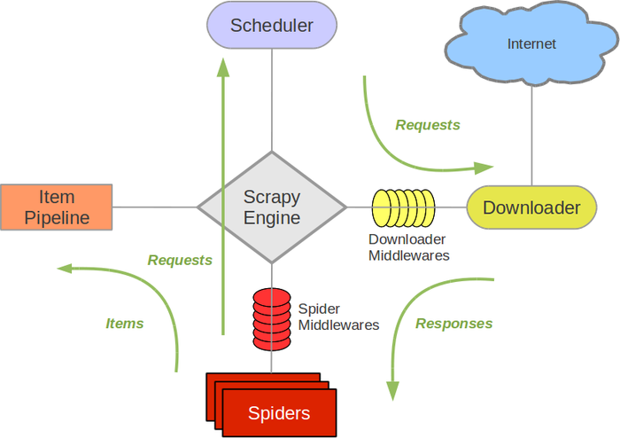
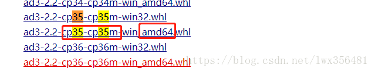

Scrapy is an application framework written in Python for crawling website data and extracting structured data.
Scrapy is often used in a series of programs including data mining, information processing, or storing historical data.
Usually, we can easily implement a crawler through the Scrapy framework to grab the content or images of a specified website.
Scrapy architecture diagram (green lines indicate data flow)

-
Scrapy Engine: Responsible for communication, signals, data transfer, etc., among Spider, ItemPipeline, Downloader, and Scheduler.
-
Scheduler: It is responsible for accepting the Request requests sent by the engine, organizing and arranging them in a certain way, enqueueing them, and returning them to the engine when the engine needs them.
-
Downloader: It is responsible for downloading all Requests sent by the Scrapy Engine, and returning the obtained Responses to the Scrapy Engine, which then hands them to the Spider for processing.
-
Spider: It is responsible for processing all Responses, analyzing and extracting data from them, obtaining the data required for Item fields, and submitting the URLs that need to be followed to the engine, which then enters the Scheduler again.
-
Item Pipeline: It is responsible for processing the Items obtained from the Spider, and is the place for post-processing (detailed analysis, filtering, storage, etc.).
-
Downloader Middlewares: You can think of it as a component that allows custom extension of download functionality.
-
Spider Middlewares: You can understand it as a functional component that allows custom extension and manipulation of the communication between the engine and the Spider (such as Responses entering the Spider; and Requests leaving the Spider).
Scrapy operation process
Once the code is written, the program starts running...
- 1 Engine: Hi! Spider, which website do you want to process?
- 2 Spider: The boss wants me to handle xxxx.com.
- 3 Engine: Give me the first URL to process.
- 4 Spider: Here you go, the first URL is xxxxxxx.com.
- 5 Engine: Hi! Scheduler, I have a request here, please sort and enqueue it for me.
- 6 Scheduler: Okay, I'm processing it, wait a moment.
- 7 Engine: Hi! Scheduler, give me the processed request.
- 8 Scheduler: Here you go, this is the processed request.
- 9 Engine: Hi! Downloader, please download this request according to the boss's downloader middleware settings.
- 10 Downloader: Okay! Here you go, this is the downloaded content. (If it fails: sorry, this request failed to download. Then the engine tells the scheduler that this request failed to download, record it, and we will download it again later.)
- 11 Engine: Hi! Spider, this is the downloaded content, and it has already been processed according to the boss's downloader middleware. Handle it yourself. (Note! Here the response is by default handed to the def parse() function for processing.)
- 12 Spider: (After processing the data, for URLs that need to be followed up), Hi! Engine, I have two results here. This is the URL I need to follow up on, and this is the Item data I obtained.
- 13 Engine: Hi! Pipeline, I have an item here, please process it for me! Scheduler! This is the URL that needs follow-up, please process it for me. Then loop from step 4 until all the information the boss needs is obtained.
- 14 Pipeline and Scheduler: Okay, we will do it right now!
Note! The entire program will stop only when there are no more requests in the scheduler. (That is, for URLs that failed to download, Scrapy will also download them again.)
Making a Scrapy crawler requires 4 steps in total:
- Create a new project (scrapy startproject xxx): Create a new crawler project.
- Define the target (write items.py): Define the target you want to crawl.
- Create the crawler (spiders/xxspider.py): Create a crawler to start crawling web pages.
- Store content (pipelines.py): Design pipelines to store the crawled content.
Installation
Windows installation method
Upgrade the pip version:
pip install --upgrade pip
Install the Scrapy framework via pip:
pip install Scrapy
Ubuntu installation method
Install non-Python dependencies:
sudo apt-get install python-dev python-pip libxml2-dev libxslt1-dev zlib1g-dev libffi-dev libssl-dev
Install the Scrapy framework via pip:
sudo pip install scrapy
Mac OS installation method
For the Mac OS system, since the system itself references its built-in python2.x libraries, the packages installed by default cannot be deleted. However, installing Scrapy with python2.x will report an error, and installing with python3.x will also report an error. In the end, I did not find a way to install Scrapy directly, so I will use another installation method to explain the installation steps. The solution is to use virtualenv for installation.
$ sudo pip install virtualenv $ virtualenv scrapyenv $ cd scrapyenv $ source bin/activate $ pip install Scrapy
After installation, just type scrapy in the command terminal, and if a result similar to the following is displayed, it means the installation has succeeded.

Getting started example
Learning objectives
- Create a Scrapy project
- Define the structured data (Item) to be extracted
- Write a Spider to crawl the website and extract structured data (Item)
- Write Item Pipelines to store the extracted Items (i.e., structured data)
1. Create a new project (scrapy startproject)
Before starting to crawl, you must create a new Scrapy project. Enter the custom project directory and run the following command:
scrapy startproject mySpider
Here, mySpider is the project name. You will see that a mySpider folder is created, and the directory structure is roughly as follows:
Let's briefly introduce the role of each main file:
mySpider/
scrapy.cfg
mySpider/
__init__.py
items.py
pipelines.py
settings.py
spiders/
__init__.py
...
These files are:
- scrapy.cfg: The project configuration file.
- mySpider/: The project's Python module, where code will be referenced from here.
- mySpider/items.py: The project's target file.
- mySpider/pipelines.py: The project's pipeline file.
- mySpider/settings.py: The project's settings file.
- mySpider/spiders/: The directory that stores crawler code.
2. Define the target (mySpider/items.py)
We plan to crawlhttp://www.itcast.cn/channel/teacher.shtmlthe names, titles, and personal information of all instructors on the website.
Open items.py in the mySpider directory.
Item defines structured data fields, used to save the crawled data. It is somewhat like a dict in Python, but provides some additional protection to reduce errors.
You can define an Item by creating a scrapy.Item class and defining class attributes of type scrapy.Field (which can be understood as similar to an ORM mapping relationship).
Next, create an ItcastItem class and construct the item model.
import scrapy class ItcastItem(scrapy.Item): name = scrapy.Field() title = scrapy.Field() info = scrapy.Field()
3. Create the crawler (spiders/itcastSpider.py)
The crawler functionality needs to be divided into two steps:
1. Crawl the data
Enter the command in the current directory, it will create a crawler named itcast in the mySpider/spider directory and specify the scope of the crawl domain:
scrapy genspider itcast "itcast.cn"
Open itcast.py in the mySpider/spider directory. The following code is added by default:
import scrapy
class ItcastSpider(scrapy.Spider):
name = "itcast"
allowed_domains = ["itcast.cn"]
start_urls = (
'http://www.itcast.cn/',
)
def parse(self, response):
pass
Actually, we can also create itcast.py ourselves and write the above code, but using the command avoids the trouble of writing fixed boilerplate code.
To create a Spider, you must create a subclass using the scrapy.Spider class and define three required attributes and one method.
name = "" : the identification name of this spider. It must be unique; different spiders must define different names.
allow_domains = [] is the search domain scope, that is, the restricted area of the spider. It specifies that the spider only crawls pages under this domain, and non-existent URLs will be ignored.
start_urls = () : the URL tuple/list to crawl. The spider starts fetching data from here, so the first downloaded data will start from these URLs. Other sub-URLs will be generated by inheritance from these starting URLs.
parse(self, response) : the parsing method. It will be called after each initial URL is downloaded. When called, it takes the Response object returned from each URL as the only parameter. Its main functions are as follows:
Responsible for parsing the returned web page data (response.body) and extracting structured data (generating items).
Generate URL requests for the next page.
Modify the value of start_urls to the first url that needs to be crawled.
start_urls = ("http://www.itcast.cn/channel/teacher.shtml",)
Modify the parse() method.
def parse(self, response):
filename = "teacher.html"
open(filename, 'w').write(response.body)
Then run it to see. Execute in the mySpider directory:
scrapy crawl itcast
Yes, it is itcast. Looking at the code above, it is the name attribute of the ItcastSpider class, which is the unique spider name when using the scrapy genspider command.
After running, if the printed log shows [scrapy] INFO: Spider closed (finished), it means execution is complete. After that, a teacher.html file appears in the current folder, which contains all the source code information of the web page we just crawled.
Note:The default encoding environment for Python2.x is ASCII. When it does not match the encoding format of the retrieved data, garbled text may occur; we can specify the encoding format of the saved content. Generally, we can add at the top of the code:
import sys
reload(sys)
sys.setdefaultencoding("utf-8")
These three lines of code are the universal key to solving Chinese encoding issues in Python2.x. After all these years of complaints, Python3 has learned its lesson and its default encoding is Unicode... (Wish you all embrace Python3 soon)
2. Extract data
After crawling the entire web page, the next step is the extraction process. First, observe the page source code:
<div class="li_txt">
<h3> xxx </h3>
<h4> xxxxx </h4>
<p> xxxxxxxx </p>
Isn't it clear at a glance? Directly use XPath to start extracting data.
For the xpath method, we only need to input the xpath rules to locate the corresponding html tag nodes. For details, you can check:xpath tutorial。
Not knowing xpath syntax doesn't matter. Chrome provides us with a one-click way to get the xpath address (Right-click -> Inspect -> Copy -> Copy XPath), as shown below:

Here are some examples of XPath expressions and their corresponding meanings:
/html/head/title: Select in the HTML document<head>the tag inside<title>element/html/head/title/text(): Select the above-mentioned<title>element's text//td: Select all<td>elements//div[@class="mine"]: Select all withclass="mine"attributedivelements
For example, we read the websitehttp://www.itcast.cn/website title. Modify the itcast.py file code as follows:
# -*- coding: utf-8 -*-
import scrapy
# 以下三行是在 Python2.x版本中解决乱码问题，Python3.x 版本的可以去掉
import sys
reload(sys)
sys.setdefaultencoding("utf-8")
class Opp2Spider(scrapy.Spider):
name = 'itcast'
allowed_domains = ['itcast.com']
start_urls = ['http://www.itcast.cn/']
def parse(self, response):
# 获取网站标题
context = response.xpath('/html/head/title/text()')
# 提取网站标题
title = context.extract_first()
print(title)
pass
Execute the following command:
$ scrapy crawl itcast ... ... 传智播客官网-好口碑IT培训机构,一样的教育,不一样的品质 ... ...
We previously defined an ItcastItem class in mySpider/items.py. Here we import it:
from mySpider.items import ItcastItem
Then encapsulate the data we obtained into an ItcastItem object, which can save each teacher's attributes:
from mySpider.items import ItcastItem
def parse(self, response):
#open("teacher.html","wb").write(response.body).close()
# 存放老师信息的集合
items = []
for each in response.xpath("//div[@class='li_txt']"):
# 将我们得到的数据封装到一个 `ItcastItem` 对象
item = ItcastItem()
#extract()方法返回的都是unicode字符串
name = each.xpath("h3/text()").extract()
title = each.xpath("h4/text()").extract()
info = each.xpath("p/text()").extract()
#xpath返回的是包含一个元素的列表
item['name'] = name[0]
item['title'] = title[0]
item['info'] = info[0]
items.append(item)
# 直接返回最后数据
return items
We will not deal with the pipeline for now; we will introduce it in detail later.
Save data
The simplest ways for scrapy to save information mainly include four types. -o outputs files in the specified format, with the following commands:
scrapy crawl itcast -o teachers.json
json lines format, default is Unicode encoding
scrapy crawl itcast -o teachers.jsonl
csv comma-separated format, can be opened with Excel
scrapy crawl itcast -o teachers.csv
xml format
scrapy crawl itcast -o teachers.xml
Thinking
If you change the code to the following form, the result is exactly the same.
Please think about the role of yield here (A Brief Analysis of Python yield Usage)：
# -*- coding: utf-8 -*-
import scrapy
from mySpider.items import ItcastItem
# 以下三行是在 Python2.x版本中解决乱码问题，Python3.x 版本的可以去掉
import sys
reload(sys)
sys.setdefaultencoding("utf-8")
class Opp2Spider(scrapy.Spider):
name = 'itcast'
allowed_domains = ['itcast.com']
start_urls = ("http://www.itcast.cn/channel/teacher.shtml",)
def parse(self, response):
#open("teacher.html","wb").write(response.body).close()
# 存放老师信息的集合
items = []
for each in response.xpath("//div[@class='li_txt']"):
# 将我们得到的数据封装到一个 `ItcastItem` 对象
item = ItcastItem()
#extract()方法返回的都是unicode字符串
name = each.xpath("h3/text()").extract()
title = each.xpath("h4/text()").extract()
info = each.xpath("p/text()").extract()
#xpath返回的是包含一个元素的列表
item['name'] = name[0]
item['title'] = title[0]
item['info'] = info[0]
items.append(item)
# 直接返回最后数据
return items
Original link: https://segmentfault.com/a/1190000013178839
Sunny
182***4239@qq.com
Reference address
Solutions when installing Scrapy with pip fails
1. (The environment has python installed) When installing scrapy, using pip install scrapy generally fails, reporting a timeout error.
So we need to install it in another way. First install the dependency libraries needed during the scrapy installation, and then install scrapy. This way, the installation can succeed.
The dependency libraries that need to be installed are lxml, pyOpenSSL, Twisted, and pywin32. Note that the libraries we install are all installed via wheel. Therefore, before installing these libraries, you must install wheel first. Open a console window and enter pip install wheel to install the wheel library first.
When installing these libraries, pay attention to the version number of the downloaded .whl file; it needs to correspond to your own Python version. For example:
My Python version is 3.5 64-bit, so choose the downloaded .whl version as XXX-cp35-cp35-win-amd64.whl:

To install lxml, go tohttps://www.lfd.uci.edu/~gohlke/pythonlibs/#twisted, look up the .whl file for lxml corresponding to the Python environment. This article uses lxml-4.1.0-cp35-cp35m-win_amd64.whl. After downloading, open a console window in the file's directory as shown below, and a console will start. Enter pip install lxml-4.1.0-cp35-cp35m-win_amd64.whl, and the installation will succeed. If it prompts that the version is incorrect, then the versions of Python and the whl file do not correspond.
To install pyOpenSSL, directly enter in the console:pip install pyOpenSSL, then wait for the installation to complete.
To install Twisted, find the appropriate installation whl file on the website https://www.lfd.uci.edu/~gohlke/pythonlibs/#twisted. The installation steps are the same as installing lxml.
To install pywin32, go to https://sourceforge.net/projects/pywin32/files/pywin32/, find the corresponding installation file, which is a file ending with .exe. Go directly to the downloaded save directory, execute the exe file, and then follow the prompts to install.
After installing the above libraries, you can start installing scrapy. Open the console and run pip install scrapy. I also got errors when installing scrapy at first, but after installing all the libraries, it succeeded. Note that timeout issues may still occur during the process; if you encounter this, just retry once or twice.
Sunny
182***4239@qq.com
Reference address
Sunny
182***4239@qq.com
Reference address
Scrapy reports an error when executing the crawl command: ModuleNotFoundError: No module named 'win32api'
Today I used scrapy for the first time on a new computer and encountered quite a few problems, which made me want to complain.
Basic environment:
Problem description:
After spending a lot of effort successfully installing scrapy, crawl reported an error: "ModuleNotFoundError: No module named 'win32api'"
Solution (updated on 2017.09.23):
Looking back now, this is also an error caused by a missing dependency package, and it only occurs in Windows systems.
There is no need to patch the Windows system as previously found on Stack Overflow; instead, directly install a library for Python (compared to the previous method, it actually patches a higher level) — pypiwin32.
(Written on 2017.08.18)
I found a solution on Stack Overflow and followed the instructions. I performed two steps and successfully resolved the error. However, I suspect the first step was actually redundant; you could directly execute the second step:
Sunny
182***4239@qq.com
Reference URL
tOmMy
era***q.com
Regarding issues when saving scraped files with Python3:
The code is as follows:
A few points to note here:
tOmMy
era***q.com